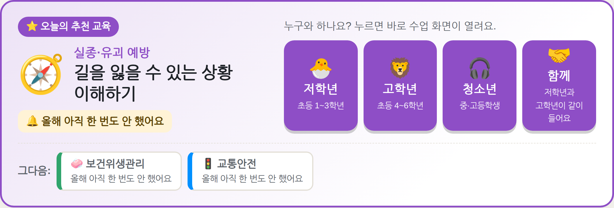
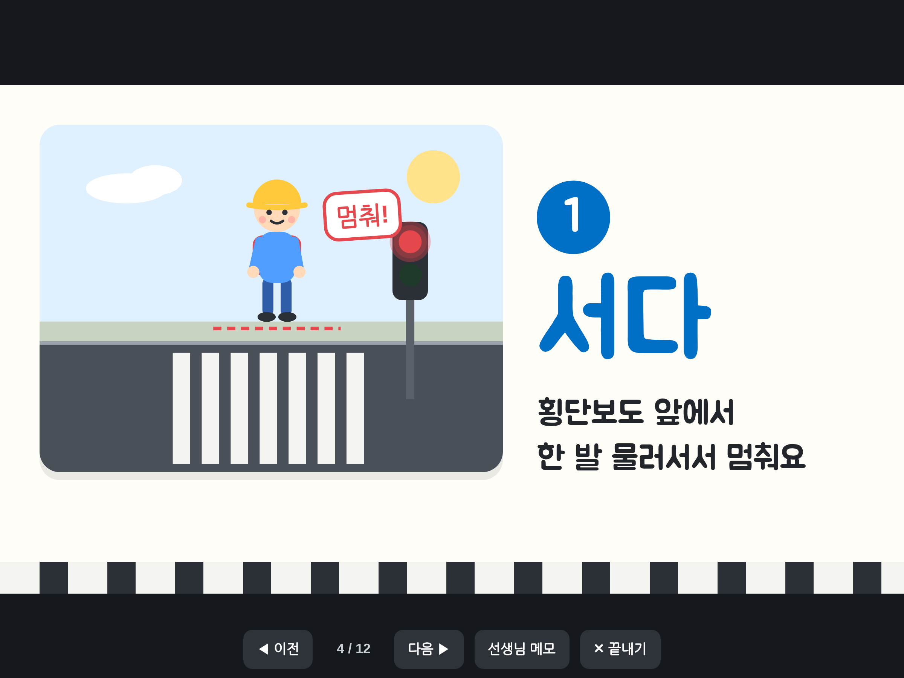
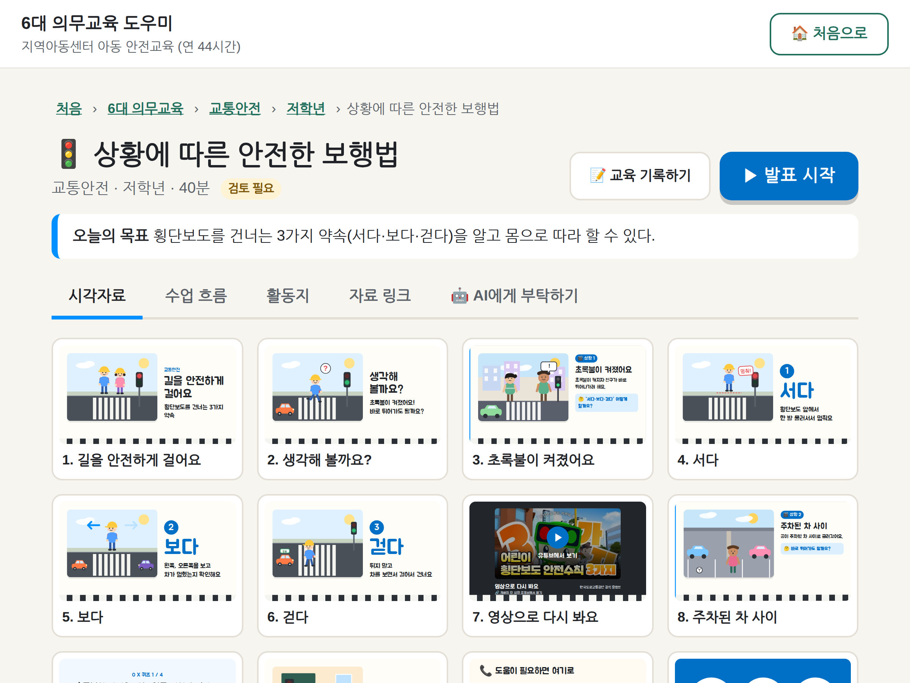
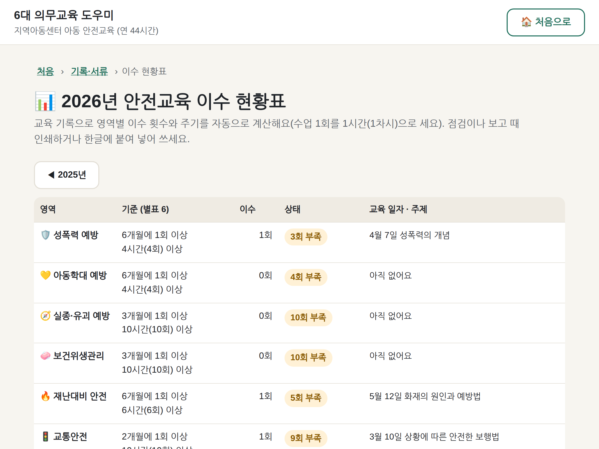

1이런 문제가 있었어요
장면 1 · 주제 찾기
해마다 같은 영역, "올해는 뭘 하지?"
장면 2 · 자료 준비
자료가 기관마다 흩어져 있어요
장면 3 · 주기·기록
주기를 놓치고, 일지는 따로 써요
2이렇게 해결해요
영역·대상 고르기
6대 영역 + 아동인권 · 저·고학년·청소년
▶
40분 수업 그대로
TV 슬라이드 · 수업 흐름 · 활동지 · PPT · 공식 영상
▶
기록하면 서류까지
한글 일지 · 연간 계획표 · 이수 현황표
근거: 아동복지법 시행령 별표 6 (6개 영역, 연 44시간) — 주기를 계산해 '오늘의 추천 교육'을 알려 줘요.
3주요 기능

01오늘의 추천 교육
주기가 지난 영역부터 — 대상만 누르면 수업 화면

02TV로 띄우는 발표 모드
상황 장면 · 약속 · 퀴즈 · 영상, 선생님 대본 메모

03수업 자료가 한 화면에
시각자료 · 수업 흐름 · 활동지 · 자료 링크 · AI 부탁 글

04이수 현황 자동 계산
영역별 횟수·주기 점검 → 인쇄·한글에 붙여 넣기
4한눈에 보는 숫자
128개
40분 수업 (저·고학년·청소년)
44회
연간 진행·주기 자동 관리
0원
설치·회원가입·AI 비용 없이